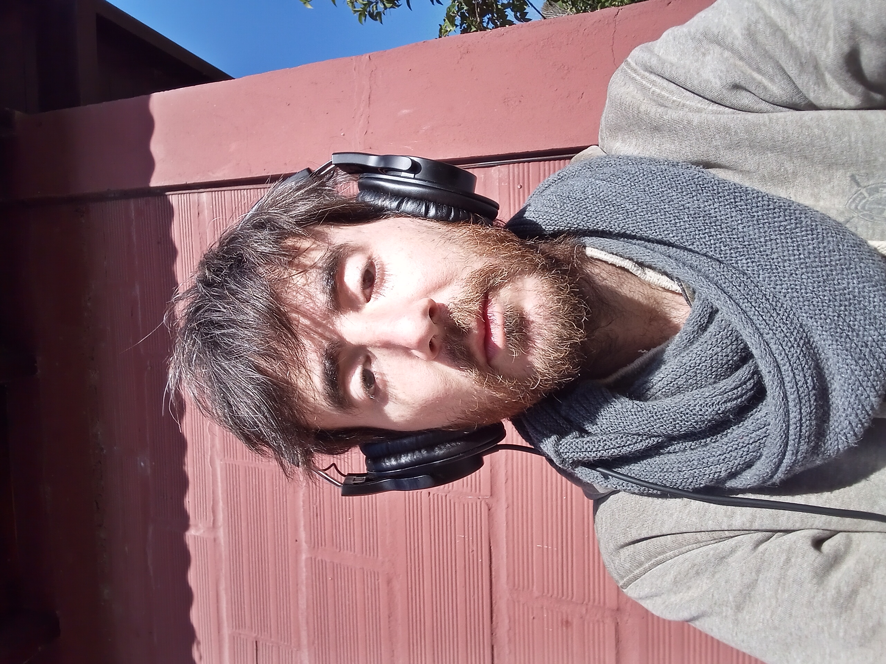

Curriculum Vitae
Sobre_mi
Datos Personales
Nombre completo:
Facundo Elorz
Fecha de nacimiento:
27/04/1990
Lugar de nacimiento:
Gral. Madariaga, Pcia. de Buenos Aires
Formacion Academica
2022 (Actualmente en Curso): Onboarding Carrera Certified Tech Developer
2009-2011: Estudio en Conservatorio de Musica en Villa Gesell
Estudio en Conservatorio de Musica en Mar del Plata
2005-2007: Colegio Secundario completo
Experiencia Laboral
2009-2013: Atencion al cliente en diferentes comercios
2014-2017: Ventas
2018-2021: Trabajos de desarrollo multiple